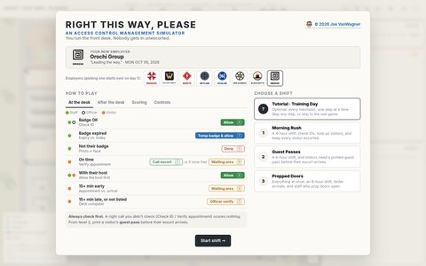
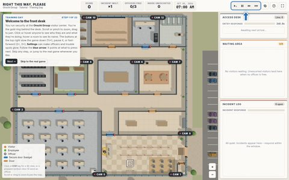
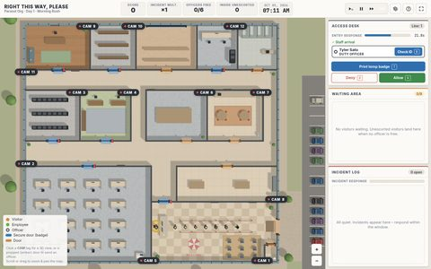
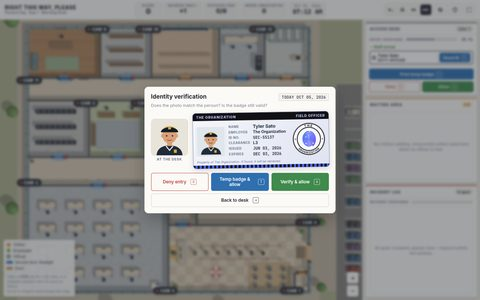
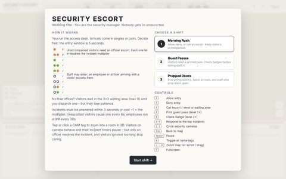
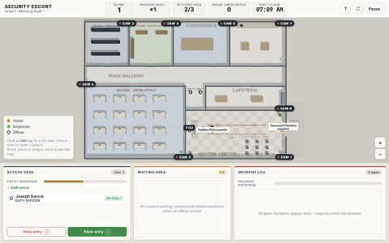
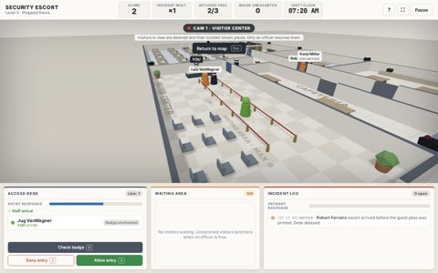
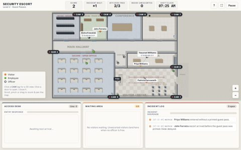
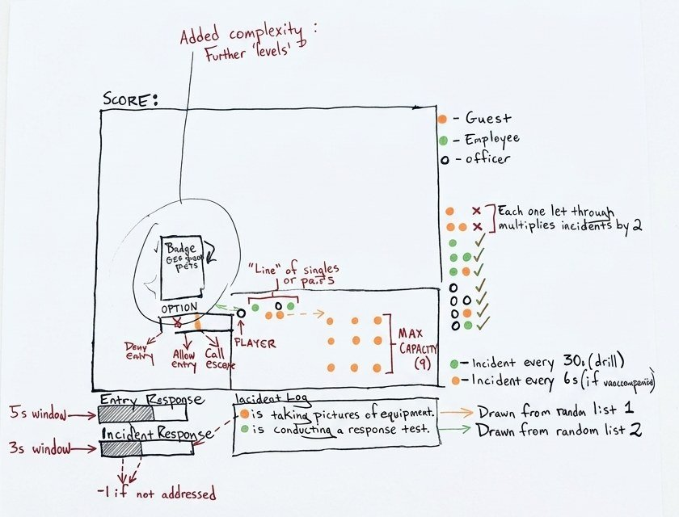

Learning game · An access control management simulator · HTML / JavaScript / 3D
Right This Way, Please
A fast entry-control game: check every badge, decide who gets in, and keep an eye on the people you already let through.
Security officers make dozens of small access decisions every shift, and most of the risk lives in the ones made in a hurry. This game turns that into a few frantic minutes of play, so the habits (check the badge, escort every guest, respond to every incident) get practiced under a little pressure instead of just read about. You run the access desk of a small office building, with a live floor map, security cameras you can click into for a 3D view, and three shifts that get harder as you go.
Controls: A allow, D deny, E call an escort, W send someone to the waiting area, B check a staff ID, V verify a visitor's appointment, T print a temp pass, O have an officer verify a visitor (not on the list, or late), P print a guest pass, 1–3 answer incidents, [ ] cycle cameras, N name tags, , . slower or faster (½× to 3×), Space pause; or just click (or tap) the buttons. Best on a computer, but it works on a phone or tablet too.
Tip: click inside the game first so it can hear your keyboard. On a small screen, try the full-screen version.
Screenshots








From an earlier beta








Where it started


How it plays
- The line. Visitors, employees, and fellow officers arrive one at a time or in pairs. You run the access desk and decide: allow, deny, or call an escort. The entry window starts relaxed and tightens as the line and the waiting area fill up.
- Check before you decide. Staff hand you their ID: compare the photo with the person and check the expiry date (an expired badge gets a printed temp pass). Visitors give their name: find it on the desk computer's list of today's appointments, or have an officer verify anyone who isn't on it.
- Pick your employer. Choose which (fictional, and slightly suspicious) company you guard, from Parasol Org to Iris Science; picking one starts you over on day 1. Every shift opens with a briefing.
- Escorts matter. Staff may enter, and an employee or officer arriving with a visitor escorts them. Every unaccompanied visitor you let in doubles the incident multiplier.
- No free officer? Visitors wait in the waiting area (nine seats at most) until you dispatch one, but they lose patience.
- The incident log. Incidents must be answered within 3 seconds or they cost points. Unescorted visitors cause one every few seconds; employees run the occasional drill to keep you honest.
- Patrols. Every hour on the hour a free officer walks a patrol; if nobody's free within 15 minutes, the client is upset. Free officers also wander and check on the waiting area.
- Security cameras. Click a camera tag to zoom into any room in 3D. Visitors on camera behave and their incident timers pause, but only an officer can resolve an incident.
- Training Day. An optional tutorial walks through every mechanic one step at a time; skip any step, or skip straight to the real game.
- Three shifts. Morning Rush (a 4-hour shift: check IDs, look up visitors, and keep every visitor escorted), Guest Passes (6 hours, and visitors also need a printed pass before their escort arrives), and Propped Doors (8 hours of everything at once, faster arrivals, and staff who prop doors open).
What it trains
Like my other learning games, it'll be plain HTML and JavaScript that drops right into a course.